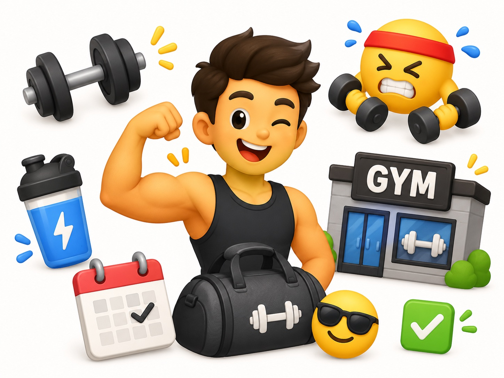
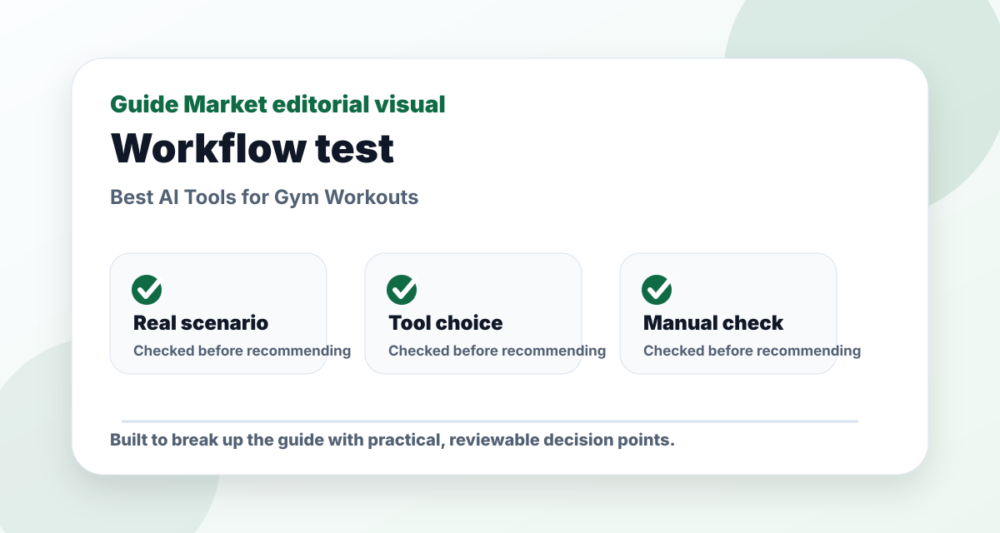
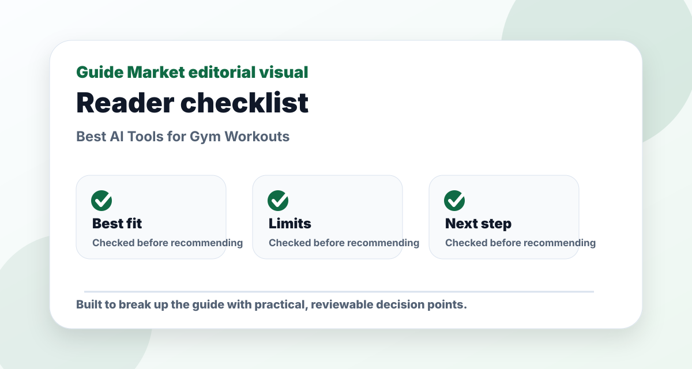
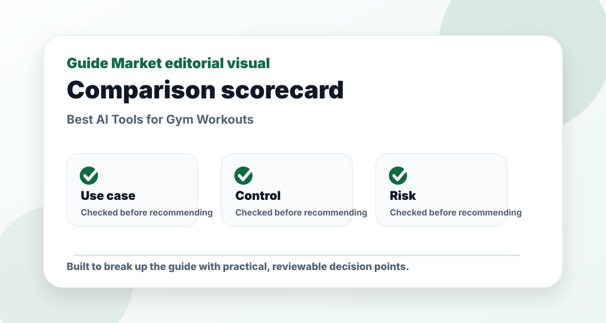

Best AI Tools for Gym Workouts
Published May 12, 2026. Last updated May 24, 2026. Estimated reading time: 9 minutes.
Workout AI should not be judged by how intense the plan looks. It should be judged by progression, recovery, exercise substitutions, and whether a real person can follow it for months. A flashy seven-day split is easy to generate; a sustainable plan is harder.




The real problem this guide solves
This guide is not meant to be a quick list of names. The real problem is choosing gym workouts tools that solve a real task instead of adding another unused subscription. That requires context: what the reader is trying to do, what can go wrong, and which option is useful after the first impressive demo.
I evaluate Fitbod, Freeletics, JuggernautAI, ChatGPT through a practical lens: how easy they are to start, how much control they give you, what must be verified manually, and whether they still make sense after the novelty fades. A recommendation only matters if it survives a realistic task.
Practical comparison criteria
| Criterion | What it reveals | How to test it |
|---|---|---|
| Use-case fit | Whether the option solves the actual job, not a generic version of it. | Test it with this scenario: a reader using gym workouts tools on one realistic project and comparing the output side by side. |
| Control | Whether you can edit, verify, export, or adapt the result. | Try to change the output without starting from zero. |
| Reliability | Whether the recommendation remains useful when facts, prices, or constraints change. | Check the official source and compare with at least one alternative. |
| Long-term value | Whether the workflow will be used repeatedly. | Ask if it saves time next week, not only today. |
Pros and cons
Pros
- Gives a clearer starting point for a messy decision.
- Helps compare options using the same real-world scenario.
- Creates a repeatable workflow instead of a one-off answer.
Cons
- Still requires manual verification and judgment.
- Free plans or public information may be limited or outdated.
- Choosing too many options can create more work, not less.
Editorial verdict
My pick: Fitbod for most gym users, JuggernautAI for serious strength training, and ChatGPT only as a planning helper. I would not use a general chatbot as my only coach if injuries, pain, or heavy lifting are involved.
Quick picks
- Best for beginners: Fitbod
- Best bodyweight option: Freeletics
- Best for powerlifting-style strength: JuggernautAI
- Best free planning helper: ChatGPT
Price and feature snapshot
| Tool | Price snapshot | Pros | Cons |
|---|---|---|---|
| Fitbod Official site | Subscription app; pricing varies by platform and region | Adaptive gym routines and exercise substitutions | Can overcomplicate plans if you do not log honestly |
| Freeletics Official site | Free app with paid Coach subscription options | Bodyweight training and habit building | Less ideal for detailed barbell progression |
| JuggernautAI Official site | Paid strength coaching app; check official pricing | Powerlifting, strength blocks, fatigue feedback | Too specialized for casual gym users |
| ChatGPT Official site | Free plan available; paid plans listed by OpenAI | Meal ideas, routine explanation, exercise alternatives | No sensor-based progress tracking by itself |
What matters more than AI
The best workout plan still depends on sleep, nutrition, consistency, and honest effort. AI can organize your training, but it cannot know your form quality unless you provide video, coaching feedback, or clear notes. If a movement hurts, stop and get qualified advice.
Hypertrophy vs fat loss
For hypertrophy, choose tools that track volume, muscle groups, and progressive overload. Fitbod is strong here because it adapts exercises based on equipment and recent training. For fat loss, the workout app matters less than calories, protein, steps, and adherence. ChatGPT can help build meal ideas, but it should not replace a medical professional.
Editorial recommendation
If I had to choose one app for a normal gym user, I would choose Fitbod. It is practical, adaptive, and less intimidating than strength-specialist platforms. If your main goal is squat, bench, and deadlift progress, JuggernautAI is more focused.
Best use cases
- Beginner 3-day full-body gym plan
- Home workout with no equipment
- Hypertrophy split with exercise substitutions
- Strength block where fatigue feedback matters
FAQs
What is the best option for beginners?
The best beginner option is usually the one that solves one clear task with the least setup. Start with a free or simple workflow before paying.
Are paid plans worth it?
Only when the paid feature removes a real limit such as exports, collaboration, higher usage, integrations, or better control.
Can these tools replace human review?
No. They can speed up drafting and comparison, but important facts, public content, schoolwork, business decisions, and financial details still need review.
How do I avoid generic results?
Use a specific brief with goal, audience, constraints, examples, and the format you want. Then ask the tool to revise against clear criteria.
Hands-on testing notes
For this topic, I would not judge Fitbod, Freeletics, JuggernautAI, ChatGPT from the homepage alone. Marketing pages are designed to make everything look easy. A fair test uses one task, one deadline, and one output format. In practice, that means giving every tool the same brief and judging the amount of useful work left after the first result.
In testing, I care less about the longest feature list and more about whether the workflow stays editable after the first draft. If setup takes longer than the task itself, the tool is probably wrong for a beginner. If the output is polished but hard to edit, it may create hidden friction. If the tool saves time but weakens quality, it is not a real productivity gain.
I would also test what happens when the first answer is not good enough. Can the tool revise? Can it explain why it made a choice? Can you export the result? Can you collaborate with someone else? These practical details matter more than a dramatic demo.
How to combine the tools
A strong workflow usually has three parts: one tool for creation, one for review, and one for organization. For example, use the fastest option to generate a draft, a more careful option to critique it, and your normal workspace to save the final version. This keeps AI useful without letting it take over the whole process.
For Best AI Tools for Gym Workouts, my default stack is one primary tool for the core task, one secondary tool for review, and a simple checklist for verification. Start small, test the result, then add complexity only when the simple workflow hits a real limit.
Common mistakes
- Using a vague prompt and blaming the tool for a vague result.
- Subscribing before testing the free workflow on a real task.
- Ignoring privacy or uploading information that should stay private.
- Keeping a tool because it feels impressive, even when it does not improve the final result.
- Skipping manual review when facts, claims, or public-facing content matter.
Final recommendation
My practical recommendation is to choose the simplest tool that solves the main problem, then build a repeatable checklist around it. The reader should finish with a usable process, not just a list of apps. If the tool makes the task easier to start, easier to finish, and easier to review, it has earned its place.
My workout-app test: does it adapt after a bad week?
A gym app is easy to like during week one. The real test is week three, when sleep was poor, one session was missed, and a lift felt worse than expected. A useful AI workout tool should adapt without making the user feel like the whole plan failed.
I would test each app by entering a realistic schedule: three training days, limited time, one crowded-gym constraint, and a goal such as hypertrophy or fat loss. Then I would check whether the plan includes progression, recovery, warm-ups, substitutions, and enough explanation to build confidence. Fitbod is strong for adaptive lifting, Freeletics is useful when equipment is limited, and JuggernautAI is more serious for strength-focused lifters.
Nutrition is another area where expectations need to be realistic. AI can suggest meal structure and protein targets, but it should not replace medical advice or individualized coaching. For most readers, the useful question is simple: does the tool help you train consistently without guessing every exercise?
When I would avoid an AI workout plan
I would avoid any plan that ignores pain, injury history, recovery, or technique. More volume is not automatically better. A beginner does not need a complicated six-day split if they cannot consistently train three days. A good plan should match the person in front of it, not an idealized athlete.
I would also avoid constantly switching plans. AI makes it easy to generate a new routine every week, but progress usually comes from repeating the right basics long enough to measure improvement. Use AI to refine the plan, not to escape consistency.
Editorial bottom line
The point of this guide is not to collect more tools. It is to leave with a decision that can be tested in real life. Before choosing, run one small project, compare the result with your current workflow, and ask whether the tool improved quality, saved time, or reduced confusion. If it did none of those things, it is not the right recommendation yet.
I would also keep a short note after testing: what worked, what failed, what needed manual checking, and whether I would use it again next week. That small habit turns a casual recommendation into a practical decision. It also protects you from keeping software only because it looked impressive during the first session.
Reader checkpoint
Before you leave the article, choose one action you can take today: test the main recommendation, compare it with one alternative, or write down why you are not ready to decide yet. A useful guide should create a next step, not just more open tabs.